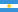
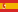
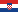
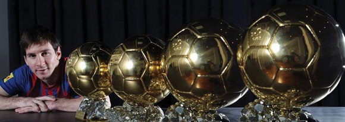

Golden Ball 2019: all owners in history The annual tradition of determining the best football player in the world in 2018 is 62 years old. The presentation of the "Golden Ball", or rather the choice of its next owner, has always caused a lot
of controversy, controversy and debate. For all the time the next “Golden Ball” was awarded, the rules and conditions for selecting the main contenders changed, but only one fact remained unchanged - this is the main individual award in
world football.
Pele and Maradona without reward The conditions stipulated that voting among journalists was carried out exclusively for players with European citizenship who represented football clubs in championships in Europe. For this reason, many legendary
footballers from Latin America, showing a brilliant game in European stadiums, could not claim this award.
Holders of the "Golden Ball" from 2010 to 2018
Years
Name
Nation
Clubs
2010
Lionel Messi
 Argentina
 Barcelona
2011
Lionel Messi
Argentina
Barcelona
2012
Lionel Messi
Argentina
Barcelona
2013
Cristiano Ronaldo
Portugal
RealMadrid
2014
Cristiano Ronaldo
Portugal
RealMadrid
2015
Lionel Messi
Argentina
Barcelona
France Football Golden Ball (since 2016)
2016
Cristiano Ronaldo
Portugal
RealMadrid
2017
Cristiano Ronaldo
Portugal
RealMadrid
2018
Luka Modric
 Croatia
RealMadrid
Some statistics
Only three players became three-time winners of the Golden Ball:
Marco van Basten
Michel Platini
Johan Cruyff.
Lionel Messi is currently the record holder in the number of awards received, taking into account the prize of the FIFA format updated in 2010. In total, he has already five balls.

This football player was able to reach almost all the heights in modern world football. The only unconquered peak is the World Cup, for which Lionel would probably be ready to give up the next Golden Ball. It is worth noting the pattern to determine
the best player, which has developed over many years. Most often, the owners of the award are the players of the attacking line. Only four defenders were honored with this award and one goalkeeper (Lev Yashin, 1963). Today, the FIFA Player of
the Year award is awarded to a player as a result of a vote among football players - captains of national teams and coaches from around the world. The presentation of the next trophy will be held at the end of 2019 at the headquarters of FIFA
(Zurich).